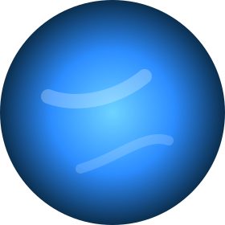
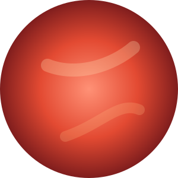
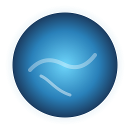
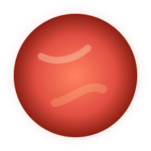
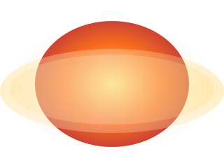

Galaxy Gate'i Keşfedin
Öne çıkan astronotlar, canlı dünyalar, çığır açan keşifler ve interaktif zorluklar aracılığıyla sorunsuz bir yolculuğa başlayın.





Öne çıkan astronotlar, canlı dünyalar, çığır açan keşifler ve interaktif zorluklar aracılığıyla sorunsuz bir yolculuğa başlayın.
Uzayı keşfeden cesur kaşifleri tanıyın

Ay'da yürüyen ilk kişi

ISS Komutanı

Rekor kıran astronot

ESA Astronotu
Güneş sistemimizdeki sekiz gezegeni keşfedin
En yakın gezegen
En sıcak gezegen
Evimiz
Kırmızı gezegen
En büyük gezegen
Halkalı gezegen
Yan yatık gezegen
En uzak gezegen
NASA'nın ötegezegen keşiflerini keşfedin
Dünya'ya sadece 4.2 ışık yılı uzaklıkta bilinen en yakın ötegezegen, potansiyel olarak yaşanabilir kayalık dünya.
Daha Fazla BilgiYedi Dünya boyutundaki gezegenden oluşan ünlü sistem, yaşamı destekleme potansiyeli yüksek.
Daha Fazla Bilgi"Dünya 2.0" olarak adlandırılan, Güneş benzeri bir yıldızın etrafındaki yaşanabilir bölgede kayalık gezegen.
Daha Fazla BilgiUzayın büyüleyici dünyasından şaşırtıcı bilgiler keşfedin
Dünya, Güneş etrafında saatte yaklaşık 107,000 km hızla dönüyor. Bu, bir jet uçağından 30 kat daha hızlı!
Daha Fazla BilgiGüneş o kadar büyük ki, içine 1.3 milyon Dünya sığabilir. Kütlesi Güneş sisteminin %99.86'sını oluşturur.
Daha Fazla BilgiSatürn'ün halkaları çoğunlukla buz parçacıklarından oluşur. Bazı parçacıklar bir ev kadar büyük olabilir!
Daha Fazla Bilgi